Palette Viewer
simulate-palette.Rmd
library(styles.cmac)
library(cowplot)
library(tidyverse)
#> ── Attaching core tidyverse packages ──────────────────────── tidyverse 2.0.0 ──
#> ✔ dplyr 1.1.4 ✔ readr 2.1.5
#> ✔ forcats 1.0.0 ✔ stringr 1.5.1
#> ✔ ggplot2 3.5.1 ✔ tibble 3.2.1
#> ✔ lubridate 1.9.3 ✔ tidyr 1.3.1
#> ✔ purrr 1.0.2
#> ── Conflicts ────────────────────────────────────────── tidyverse_conflicts() ──
#> ✖ dplyr::filter() masks stats::filter()
#> ✖ dplyr::lag() masks stats::lag()
#> ✖ lubridate::stamp() masks cowplot::stamp()
#> ℹ Use the conflicted package (<http://conflicted.r-lib.org/>) to force all conflicts to become errors
library(colorspace)
plotGeneration <- function(offset) {
# Plot 1 ----------
p1 <- ggplot(mpg, aes(class)) +
geom_bar(aes(fill = drv, color = drv), linewidth = 0.66) +
theme_cmac() +
scale_fill_cmac( colorOffset = offset) +
scale_color_cmac(colorOffset = offset)
# Plot 2 ----------
data <- data.frame(
x = rep(1:10, times = 4),
y = c(runif(10, 0, 10),
runif(10, 10, 20),
runif(10, 20, 30),
runif(10, 30, 40)
),
group = rep(c("Group1", "Group2", "Group3", "Group4"), each = 10)
)
p2 <- ggplot(data, aes(x = x, y = y, color = group)) +
geom_line(linewidth = 0.75) +
geom_point(aes(fill = group),
pch = 21,
color = 'white',
stroke = 1,
size = 2.5) +
theme(legend.position = "top") +
scale_fill_cmac( colorOffset = offset, overrideWithAccent = T) +
scale_color_cmac(colorOffset = offset)
# Plot 2-3 ----------
data <- data.frame(
x = rep(1:10, times = 4),
y = c(runif(10, 0, 10),
runif(10, 10, 20),
runif(10, 20, 30),
runif(10, 30, 40)
),
group = rep(c("Group1", "Group2", "Group3", "Group4"), each = 10)
)
p2.1_base <- ggplot(mtcars, aes(x = wt, y = mpg, colour = as.factor(cyl))) +
geom_point(size = 3.5) +
theme_cmac()
# two plots
p2.1.1 <- p2.1_base + scale_color_cmac(colorOffset = offset, overrideWithFill = F)
p2.1.2 <- p2.1_base + scale_color_cmac(colorOffset = offset, overrideWithFill = T)
# Plot 3 ----------
df <- economics_long |>
filter(variable %in% unique(economics_long$variable)[3:6])
p3 <- ggplot(df, aes(date, value01, colour = variable)) +
geom_line(linewidth = 0.75) +
theme_cmac() +
scale_color_cmac(colorOffset = offset)
# Render ----------
# Nested plot_grid for the third row with two columns
row3 <- plot_grid(p2.1.1, p2.1.2, ncol = 2)
# Main plot_grid to arrange all rows and columns accordingly
finalPlot <- plot_grid(
p2, # Second plot in second row, spanning full width
p1, # First plot in first row, spanning full width
row3, # Third row containing two plots
p3, # Fourth plot in fourth row, spanning full width
ncol = 1, # Set the number of columns in the main grid to 1
align = 'v' # Ensure vertical alignment
)
# Print the final plot layout
# cat('Offset of Palette #:', offset, '\n')
return(finalPlot)
}
# Render plot ----------
map(0:7, plotGeneration)
#> [[1]]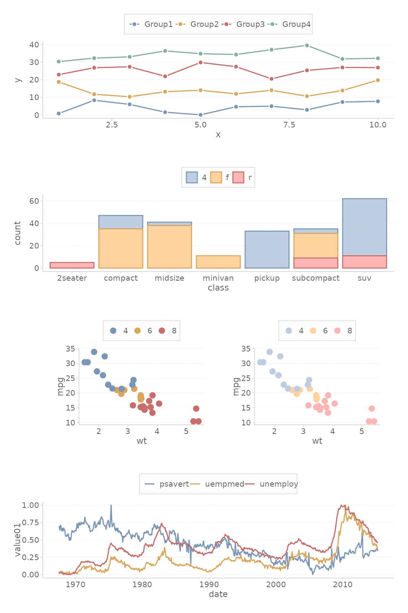
#>
#> [[2]]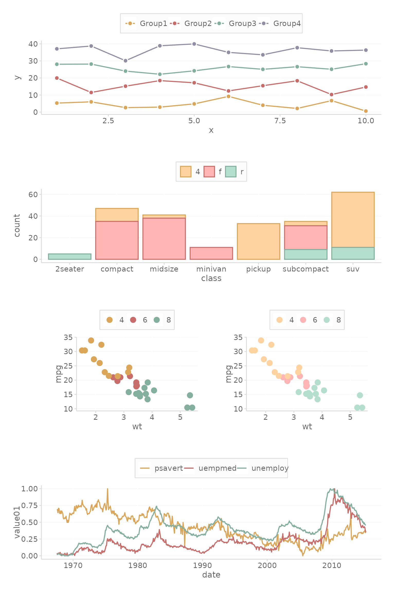
#>
#> [[3]]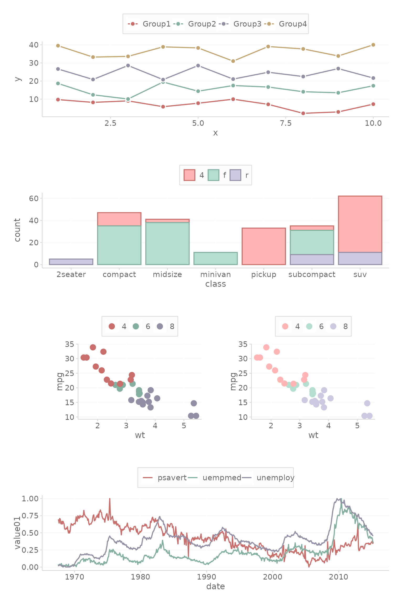
#>
#> [[4]]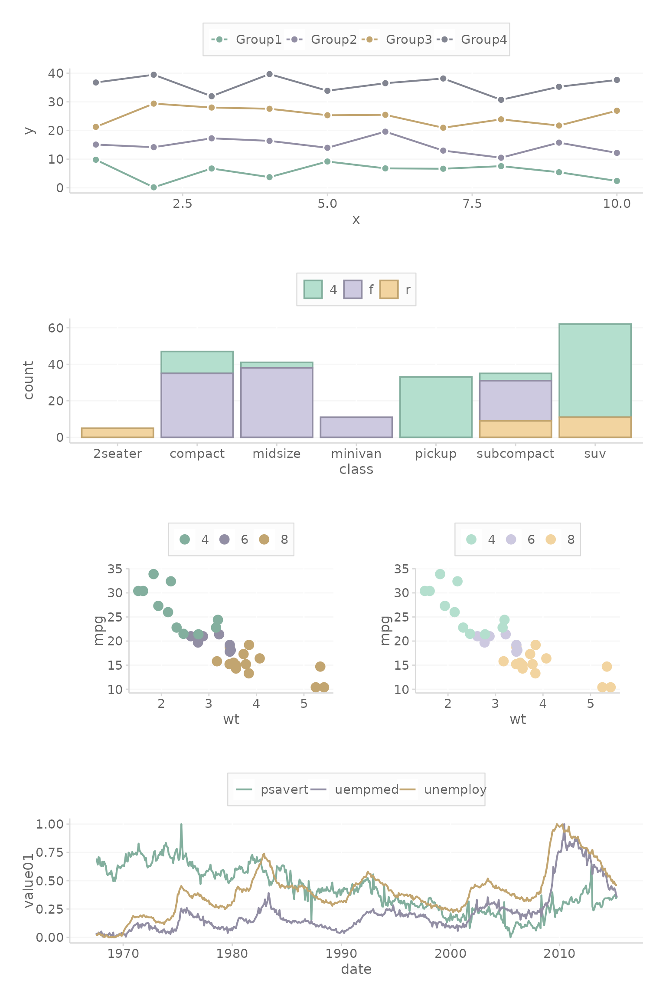
#>
#> [[5]]#>
#> [[6]]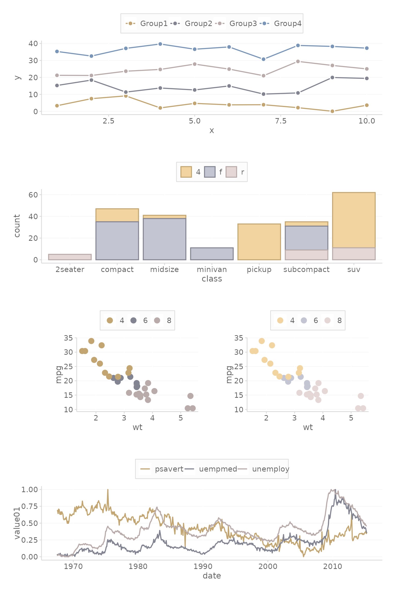
#>
#> [[7]]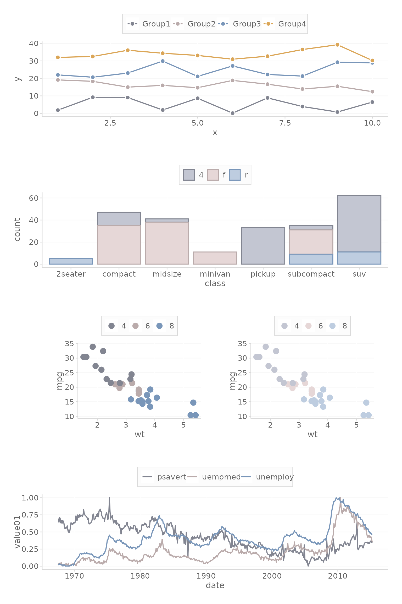
#>
#> [[8]]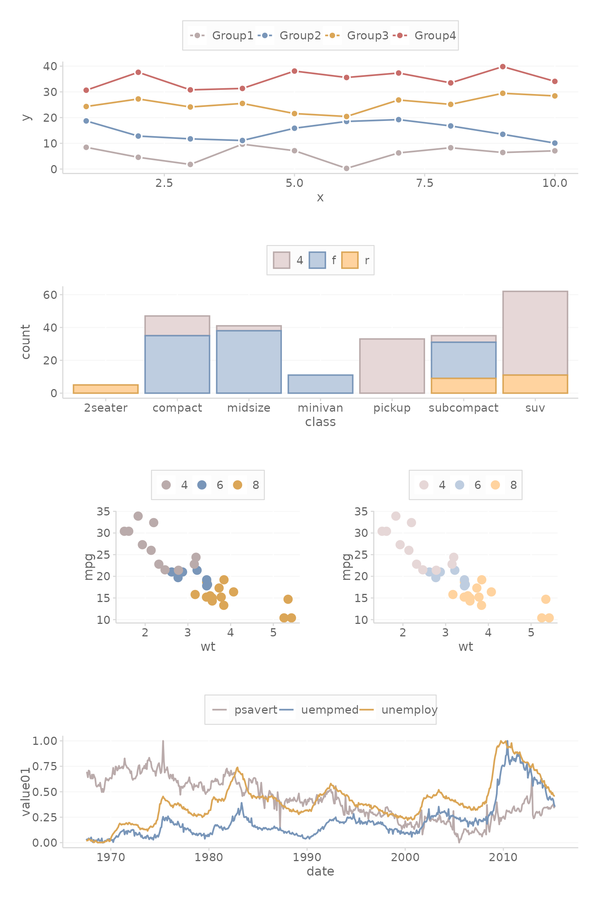
# View in colorblind mode
pal_cmac = scale_cmac('color')
specplot(pal_cmac, type = "o")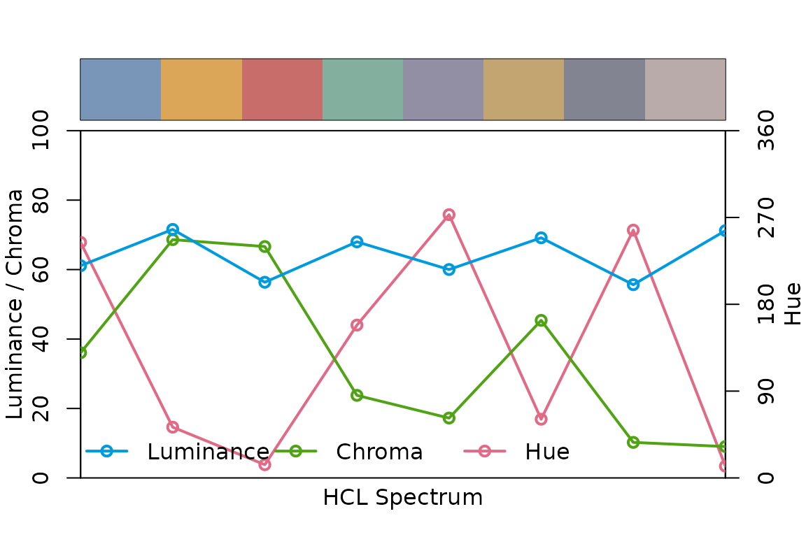
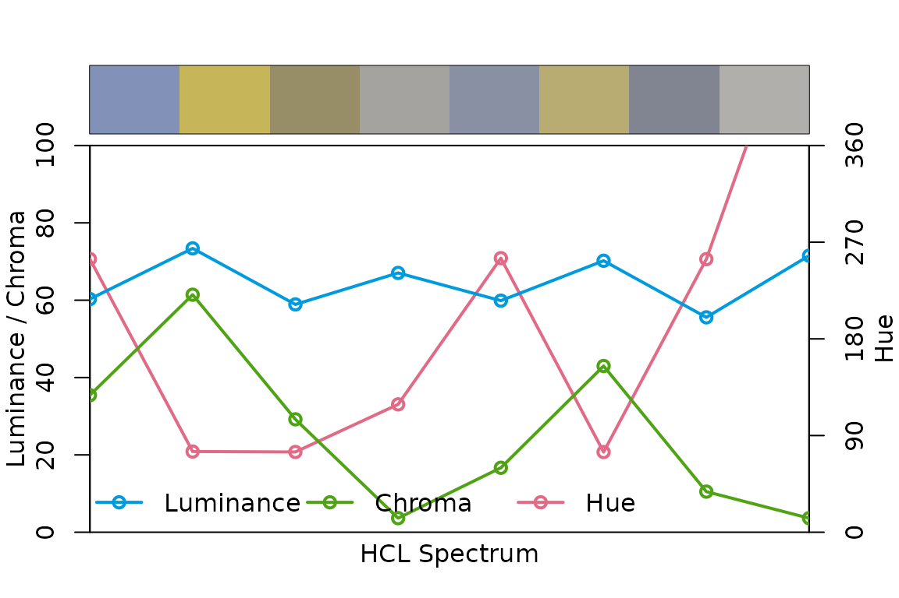
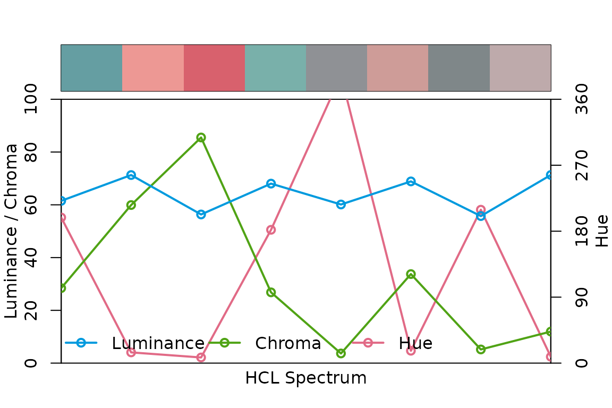
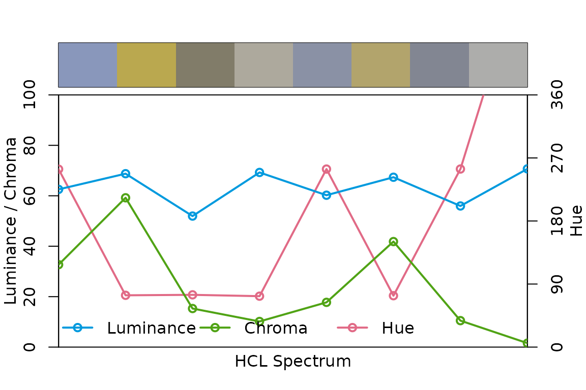
# To determine the fill colors
# data.frame(colorspace::lighten(scale_cmac('color'), 0.55))